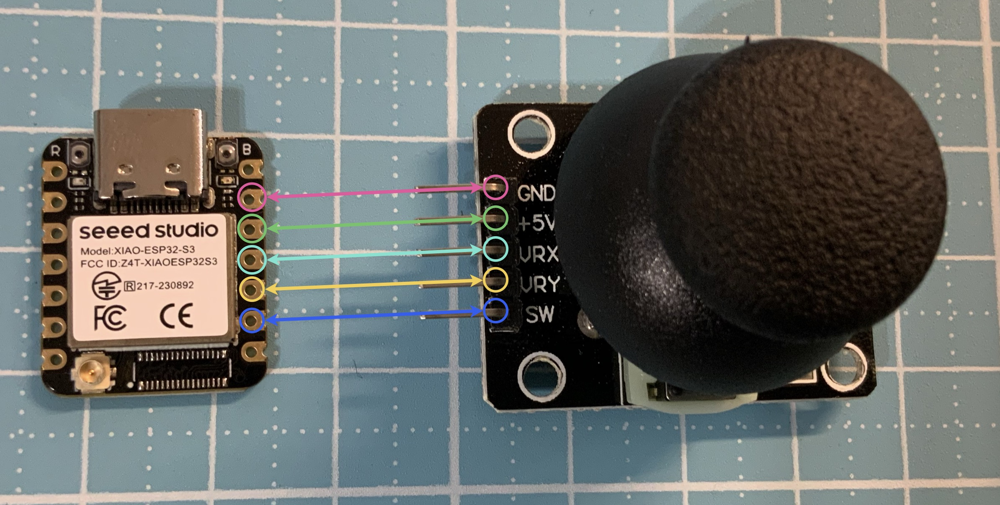

接線方式（Seeed XIAO ESP32-S3）
- GND → GND
- VCC → 3V3（⚠ 不要接 5V）
- VRX → GPIO 9
- VRY → GPIO 8
- SW → GPIO 7

圖片來源：
Seeed Studio 官方文件

此搖桿模組內含兩個可變電阻（X / Y 軸）與一個按壓開關， 可用於方向控制、選單操作、遊戲輸入等應用。
from machine import ADC, Pin # 匯入 ADC 與 Pin 類別
import time # 匯入時間模組
# === 建立 X / Y 軸 ADC 物件 ===
vrx = ADC(Pin(9)) # VRX 接在 GPIO9
vry = ADC(Pin(8)) # VRY 接在 GPIO8
# === 設定 ADC 量測範圍 ===
vrx.atten(ADC.ATTN_11DB) # 允許量測 0~3.3V
vry.atten(ADC.ATTN_11DB) # 允許量測 0~3.3V
vrx.width(ADC.WIDTH_12BIT) # 12 位元解析度（0~4095）
vry.width(ADC.WIDTH_12BIT) # 12 位元解析度（0~4095）
# === 按鈕設定（按下時為 0） ===
swi = Pin(7, Pin.IN, Pin.PULL_UP) # 使用內建上拉電阻
# === 死區與中心值 ===
DEAD = 400 # 死區範圍，避免微小抖動
# === 校正中心點 ===
def calibrate_center(samples=50):
sx = 0 # X 軸累加值
sy = 0 # Y 軸累加值
for _ in range(samples): # 取多次平均
sx += vrx.read() # 讀取 X 軸
sy += vry.read() # 讀取 Y 軸
time.sleep(0.01) # 小延遲
return sx // samples, sy // samples
CENTER_X, CENTER_Y = calibrate_center() # 執行中心校正
print("中心點校正:", CENTER_X, CENTER_Y)
# === 判斷方向函式 ===
def get_direction(x, y):
dx = x - CENTER_X # X 偏移量
dy = y - CENTER_Y # Y 偏移量
if abs(dx) < DEAD and abs(dy) < DEAD:
return "中間"
if abs(dx) > abs(dy):
return "右" if dx > 0 else "左"
else:
return "下" if dy > 0 else "上"
# === 設定執行時間（10 秒） ===
start = time.ticks_ms() # 記錄起始時間
while time.ticks_diff(time.ticks_ms(), start) < 10000:
x = vrx.read() # 讀取 X 軸 ADC
y = vry.read() # 讀取 Y 軸 ADC
direction = get_direction(x, y) # 判斷方向
if swi.value() == 0: # 若按鈕被按下
print("🔘 按鈕按下")
print("X:", x, "Y:", y, "方向:", direction)
time.sleep(0.2) # 每 0.2 秒更新一次
print("✅ 測試結束（10 秒）")
while True，
透過時間判斷讓程式 10 秒後自動結束，
非常適合教學與測試。